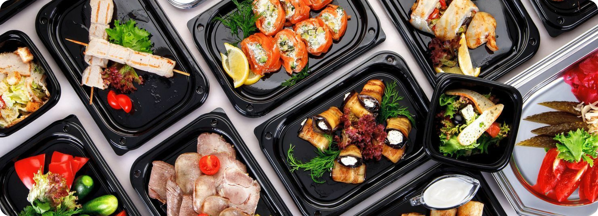
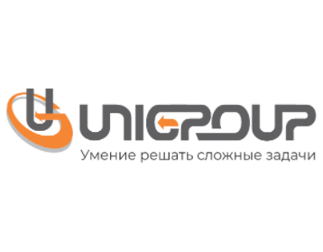
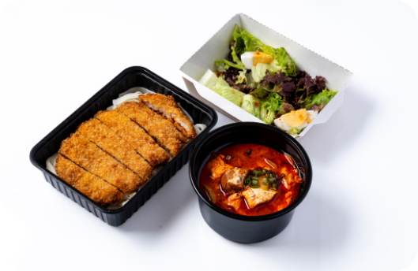

<!DOCTYPE html><html lang="ru"><head><meta charset="UTF-8"><meta http-equiv="X-UA-Compatible" content="IE=edge"><meta name="viewport" content="width=device-width,initial-scale=1"><meta name="description" content="Краткое описание документа"><meta name="keywords" content="keywords-ключевые слова для поиска"><link rel="icon" type="image/icon" href="./img/icons/brand.png"><link rel="stylesheet" type="text/css" href="./css/index.min.css"><script defer="defer" type="text/javascript" src="./js/index.min.js"></script><script defer="defer" type="text/javascript" src="./js/main.min.js"></script><title>Джонго &quot;Корпоративное питание с доставкой&quot;</title></head></html><body><div class="preloader"><span class="preloader__loader"></span></div><div class="wrapper"><div class="page" id="page"><div class="page__container"><div class="page__content"><header class="header page__header"><div class="header__top"><div class="header__text">доставка обедов на&nbsp;предприятия</div><div class="header__phone"><a href="tel:79308448484">+7 (930) 844-84-84</a></div></div><div class="header__content"><div class="header__item bp-1"><div class="header__title"><h1>Организация корпоративного питания</h1></div><div class="ordeer-button header__buttoms" data-move-el="[{'bp-max': 1440.98, 'index': 1, 'target': '.bp-1'}]"><div class="ordeer-button__button">оставить заявку</div><div class="ordeer-button__button-arrow"><i class="icon-arrow-right _icon"></i></div></div><div class="header__text"><p>Хотите питаться вкусно и разнообразно на&nbsp;рабочем месте?</p></div></div><div class="header__item"><div class="header__image" data-move-el="[{'bp-max': 960.98, 'index': 1, 'target': '.bp-1'}]"><picture><source srcset="./img/header/pic-1.webp" type="image/webp"></picture></div></div><div class="header__text-float"><p>Наша компания предлагает удобную услугу по&nbsp;доставке корпоративного питания прямо к&nbsp;вам в&nbsp;офис, столовую, стройплощадку или мероприятие!</p></div></div></header><main class="page__main-content"><section class="marketing page__marketing"><div class="marketing__row"><div class="marketing__title"><h2>Корпоративное питание&nbsp;с&nbsp;доставкой</h2></div><div class="marketing__text">- ЭТО КОМФОРТ СОТРУДНИКОВ, ПЛЮС К&nbsp;ИМИДЖУ КОМПАНИИ</div><div class="marketing__image"><picture><source srcset="./img/main/mark-1.webp" type="image/webp"></picture></div><div class="marketing__title"><h2>Сытые сотрудники повышают показатели:</h2></div><div class="indicators marketing__content"><div class="indicators__row"><div class="indicators__column"><div class="card"><div class="card__text">лояльность сотрудников на</div><div class="card__value">14%</div><div class="card__image"><picture><source srcset="./img/main/arrow.webp" type="image/webp"></picture></div></div></div><div class="indicators__column" data-move-el="[{'bp-max': 1439.99, 'index': 0, 'target': '.bp-9'}]"><div class="card"><div class="card__icon" data-move-el="[{'bp-max': 690.99, 'index': 0, 'target': '.bp-10'}]"><i class="icon-arrow-up _icon"></i></div><div class="card__value bp-10">21%</div><div class="card__text">эффективность труда (КПД)</div></div></div><div class="indicators__column" data-move-el="[{'bp-max': 1439.99, 'index': 1, 'target': '.bp-9'}]"><div class="card"><div class="card__icon"><i class="icon-smile _icon"></i></div><div class="card__text">общее настроение в&nbsp;офисе</div></div></div><div class="indicators__column" data-move-el="[{'bp-max': 1439.99, 'index': 2, 'target': '.bp-9'}]"><div class="card"><div class="card__icon"><i class="icon-alarm _icon"></i></div><div class="card__text">сокращается время от&nbsp;походов в&nbsp;кафе/магазин&nbsp;около</div><div class="card__value">30-40<span>минут</span></div></div></div><div class="indicators__column" data-move-el="[{'bp-max': 690.98, 'index': 4, 'target': '.bp-9'}]"><div class="card"><div class="card__text">концентрация на&nbsp;рабочих процессах</div><div class="card__image"><picture><source srcset="./img/main/union.webp" type="image/webp"></picture></div></div></div></div><div class="indicators__row-faidin bp-9"></div></div></div><div class="marketing__row"><div class="team-lunch"><div class="team-lunch__column"><div class="team-lunch__image" data-move-el="[{'bp-max': 1024.98, 'index': 4, 'target': '.bp-3'}]"><picture><source srcset="./img/main/mark-2.webp" type="image/webp"></picture></div></div><div class="team-lunch__column"><div class="team-lunch__info bp-3"><div class="team-lunch__icon"><i class="icon-thumbs-up _icon"></i></div><div class="team-lunch__title">Корпоративные обеды</div><div class="team-lunch__text"><p>- недооцененный инструмент повышения лояльности, сокращения текучки и&nbsp;улучшения взаимоотношений между сотрудниками.</p><p>За несколько лет работы мы участвовали в&nbsp;организации корпоративного питания десятков предприятий – нередко на&nbsp;постоянной основе. Производственные мощности, рассчитанные на&nbsp;приготовление еды свыше чем на&nbsp;3000 человек в&nbsp;день. Обширное меню из&nbsp;блюд русской, европейской и&nbsp;кавказской кухни, различные варианты комплексного питания на&nbsp;выбор и&nbsp;корпоративные скидки.</p><p>Нам важно учесть вкусы и&nbsp;пожелания каждого клиента, поэтому мы&nbsp;постоянно обновляем и&nbsp;дополняем меню. Готовим непосредственно перед&nbsp;доставкой, все блюда к&nbsp;вам приедут свежими и&nbsp;вкусными.</p></div></div></div></div></div></section><section class="consumers page__consumers"><div class="consumers__title">Нам доверяют</div><div class="consumers__content"><div class="consumers__column"><div class="consumers__image"><picture><source srcset="./img/consumers/mir-instr.webp" type="image/webp"></picture></div></div><div class="consumers__column"><div class="consumers__image"><picture><source srcset="./img/consumers/centos.webp" type="image/webp"></picture></div></div><div class="consumers__column"><div class="consumers__image"><picture><source srcset="./img/consumers/unigroups.webp" type="image/webp"></picture></div></div></div></section><section class="achievements page__achievements"><div class="achievements__content"><div class="achievements__image"><picture><source srcset="./img/main/mark-3.webp" type="image/webp"></picture><div class="achievements__label"><i class="icon-check-circle _icon"></i><span>Без&nbsp;консервантов и&nbsp;пищевых добавок</span></div><div class="achievements__label"><i class="icon-check-circle _icon"></i><span>Из&nbsp;свежих&nbsp;локальных и&nbsp;сезонных&nbsp;продуктов</span></div></div><div class="achievements__info"><div class="achievements__title">Мы&nbsp;гордимся своим производством</div><div class="achievements__text"><p>Мы&nbsp;работаем, чтобы как можно больше людей имели возможность питаться сбалансировано, доступно и&nbsp;без&nbsp;лишней траты времени.</p><p>Блюда готовятся на&nbsp;нашем собственном и&nbsp;сертифицированном производстве, которое отвечает всем санитарным нормам и&nbsp;правилам.</p></div></div></div></section><section class="assortment page__assortment"><div class="assortment__header"><div class="assortment__title">Питание на&nbsp;ваш выбор</div><div class="assortment__buttoms" data-move-el="[{'bp-max': 690.98, 'index': 0, 'target': '.bp-4'}]"><a class="assortment__button" href="">узнать меню</a><a class="assortment__button-arrow" href=""> <i class="icon-arrow-right _icon"></i></a></div></div><div class="assortment__content"><div class="assortment__column"><div class="item-card assortment__item"><div class="item-card__title">завтрак</div><div class="item-card__card-name" data-move-el="[{'bp-max': 690.98, 'index': 0, 'target': '.bp-5'}]">Завтраки</div><div class="item-card__description">Вкусные и&nbsp;полезные завтраки с&nbsp;разнообразной выпечкой настроят сотрудников на&nbsp;продуктивный рабочий день.</div></div></div><div class="assortment__column"><div class="item-card assortment__item bp-7"><div class="item-card__image"><picture><source srcset="./img/products/ph-51.webp" type="image/webp"></picture></div></div></div><div class="assortment__column"><div class="item-card assortment__item"><div class="item-card__title">обед</div><div class="item-card__card-name" data-move-el="[{'bp-max': 690.98, 'index': 0, 'target': '.bp-6'}]">Комплексные обеды</div><div class="item-card__description">Чтобы не&nbsp;тратить время на&nbsp;дорогу или&nbsp;поиск ближайшего кафе, наша доставка комплексных обедов поможет сэкономить время и&nbsp;деньги.</div></div></div><div class="assortment__column"><div class="item-card assortment__item bp-5"><div class="item-card__image"><picture><source srcset="./img/products/ph-48.webp" type="image/webp"></picture></div></div></div><div class="assortment__column"><div class="item-card assortment__item"><div class="item-card__title">ужин</div><div class="item-card__card-name" data-move-el="[{'bp-max': 690.98, 'index': 0, 'target': '.bp-7'}]">Ужин</div><div class="item-card__description">Вкусные ужины с доставкой - лучший способ проявить заботу о сотрудниках вечерами.</div></div></div><div class="assortment__column"><div class="item-card assortment__item bp-6"><div class="item-card__image"><picture><source srcset="./img/products/ph-50.webp" type="image/webp"></picture></div></div></div></div><div class="assortment__fade-in bp-4"></div></section><section class="ordeer page__ordeer"><div class="ordeer__body"><div class="ordeer__title">Заказать дегустацию</div><div class="ordeer__text"><p>Наша компания принимает заказы на&nbsp;организацию корпоративного питания по&nbsp;телефону или&nbsp;через форму заявки на&nbsp;сайте. Для обсуждения сотрудничества с&nbsp;вами свяжутся наши менеджеры.</p></div><div class="ordeer-button ordeer__buttoms"><div class="ordeer-button__button">оставить заявку</div><div class="ordeer-button__button-arrow"><i class="icon-arrow-right _icon"></i></div></div></div></section><section class="delivery page__delivery"><div class="delivery__body"><div class="delivery__header"><div class="delivery__title">Доставка корпоративного&nbsp;питания</div><div class="delivery__text">Ежедневно доставляем вкусные обеды для&nbsp;сотрудников офисов, образовательных и&nbsp;медицинских учреждений, а&nbsp;также на&nbsp;строительные площадки и&nbsp;различные мероприятия</div></div><div class="delivery__content"><div class="delivery__column"><div class="delivery__image"><picture><source srcset="./img/main/mark-4.webp" type="image/webp"></picture></div></div><div class="delivery__column"><div class="delivery__service"><ul class="delivery__list"><li class="delivery__item"><i class="icon-check-circle _icon"></i><p>Бесплатная доставка корпоративных обедов</p></li></ul><ul class="delivery__list"><li class="delivery__item"><i class="icon-check-circle _icon"></i><p>Привозим питание для&nbsp;сотрудников к&nbsp;согласованному времени</p></li></ul><ul class="delivery__list"><li class="delivery__item"><i class="icon-check-circle _icon"></i><p>Все блюда в&nbsp;индивидуальной герметичной упаковке. К&nbsp;каждому комплексу прилагаются одноразовые приборы и&nbsp;салфетки</p></li></ul><ul class="delivery__list"><li class="delivery__item"><i class="icon-check-circle _icon"></i><p>Привозим обеды свежими и&nbsp;горячими, готовыми к&nbsp;употреблению</p></li></ul><ul class="delivery__list"><li class="delivery__item"><i class="icon-check-circle _icon"></i><p>Блюда можно разогреть в&nbsp;микроволновой печи прямо в&nbsp;упаковке</p></li></ul><ul class="delivery__list"><li class="delivery__item"><i class="icon-check-circle _icon"></i><p>Множество вариантов формирования меню: одноразовое, трехразовое, ежедневное, по&nbsp;индивидуальным предпочтениям</p></li></ul><ul class="delivery__list"><li class="delivery__item"><i class="icon-check-circle _icon"></i><p>Заказ на&nbsp;корпоративное питание можно оформить на&nbsp;неделю вперед</p></li></ul><ul class="delivery__list"><li class="delivery__item"><i class="icon-check-circle _icon"></i><p>Безналичная система оплаты от&nbsp;компании или&nbsp;наличными курьеру</p></li></ul></div></div></div><div class="delivery__buttons grid-container"><div class="delivery__button">доставка на&nbsp;стройку</div><div class="delivery__button">доставка на&nbsp;производство</div><div class="delivery__button">доставка в&nbsp;офис</div><div class="delivery__button">кейтеринг</div><div class="delivery__button">организация столовой</div></div></div></section><section class="services page__services"><div class="services__body"><div class="services__header"><div class="services__title">Корпоративное питание за&nbsp;несколько шагов</div><div class="services__text">Мы поможем решить все вопросы, связанные с организацией питания: составим меню, продумаем логистику, предложим разные способы оплаты.</div></div><div class="services__content"><div class="services__column"><div class="services-card"><div class="services-card__body"><div class="services-card__number">01</div><div class="services-card__title">Консультация</div><div class="services-card__text">Оставьте заявку на&nbsp;сайте и&nbsp;мы&nbsp;свяжемся с&nbsp;вами для&nbsp;проведения консультации. Подберём удобный для&nbsp;вас способ сотрудничества, продумаем логистику, составим меню и&nbsp;проведём его дегустацию.</div></div></div></div><div class="services__column"><div class="services-card"><div class="services-card__body"><div class="services-card__number">02</div><div class="services-card__title">Заключение договора</div><div class="services-card__text">Когда вы&nbsp;будете готовы к&nbsp;сотрудничеству, мы&nbsp;согласуем и&nbsp;подпишем договор, в&nbsp;котором пропишем все условия работы. Ежемесячно предоставляем все необходимые документы для&nbsp;бухгалтерии.</div></div></div></div><div class="services__column"><div class="services-card"><div class="services-card__body"><div class="services-card__number">03</div><div class="services-card__title">Обслуживание</div><div class="services-card__text">Теперь ваши сотрудники обеспечены ежедневным сбалансированным и&nbsp;полезным питанием. Мы&nbsp;всегда сможем скорректировать меню с&nbsp;учётом ваших пожеланий и&nbsp;выполнить любой нестандартный запрос.</div></div></div></div></div></div></section><section class="helper page__helper"><div class="helper__body"><div class="helper__title">Отвечаем на&nbsp;самые частые&nbsp;вопросы</div><div class="helper__content"><div class="helper__row"><div class="helper__text">Как и из чего готовится еда на&nbsp;нашем производстве?</div></div><div class="helper__row"><div class="helper__text">Мы используем технологичное оборудование, но&nbsp;при этом классические методы приготовления пищи. Многие процессы на&nbsp;нашей кухне делаются не&nbsp;машинами, а&nbsp;руками проверенных и&nbsp;надежных поваров, мы&nbsp;также вручную тщательно проверяем поступающие продукты, бережно и&nbsp;в&nbsp;идеальных санитарных условиях упаковываем готовую еду. Мы&nbsp;не&nbsp;используем искусственные консерванты, поэтому вся наша продукция хранится &nbsp;более 48 часов.</div></div><div class="helper__row"><div class="helper__text">Какие блюда входят в&nbsp;меню корпоративных обедов?</div></div><div class="helper__row"><div class="helper__text">Меню разнообразно и&nbsp;составляется с&nbsp;учетом предпочтений и&nbsp;потребностей разных клиентов. Оно включает в&nbsp;себя горячие и&nbsp;холодные блюда, салаты, закуски, десерты, а&nbsp;также опции для&nbsp;вегетарианцев и&nbsp;людей с&nbsp; определенными диетическими ограничениями.</div></div><div class="helper__row"><div class="helper__text">Можно&nbsp;ли заказать корпоративные обеды на&nbsp;разные дни недели?</div></div><div class="helper__row"><div class="helper__text">Конечно! Мы готовы предложить гибкое расписание доставки на&nbsp;любые дни недели в&nbsp;удобное для&nbsp;вас время. Вы можете заказывать еду на&nbsp;регулярной основе или по&nbsp;мере необходимости.</div></div><div class="helper__row"><div class="helper__text">Сколько времени заранее нужно заказывать корпоративные обеды?</div></div><div class="helper__row"><div class="helper__text">Мы рекомендуем заказывать корпоративные обеды за&nbsp;24 часа до&nbsp;желаемого времени доставки. Это позволяет нам собрать и&nbsp;подготовить все ингредиенты для&nbsp;вашего заказа, гарантируя свежесть и&nbsp;качество блюд.</div></div><div class="helper__row"><div class="helper__text">Какую информацию нужно предоставить при&nbsp;заказе корпоративных обедов?</div></div><div class="helper__row"><div class="helper__text">Для успешного заказа корпоративного питания, мы&nbsp;попросим вас предоставить следующую информацию: количество обедов, меню или&nbsp;конкретные предпочтения, адрес доставки, желаемое время доставки и&nbsp;контактные данные для&nbsp; связи. Это позволит нам обеспечить эффективную доставку и&nbsp;высокий уровень обслуживания.</div></div></div></div></section><section class="reviews page__reviews"><div class="reviews__body"><div class="reviews__title">Отзывы постоянных клиентов</div><div class="reviews__content"><div class="reviews__column"><div class="user-reviews"><div class="user-reviews__header"><div class="user-reviews__name">Максим Хромов</div><div class="user-reviews__icon"><i class="icon-marks _icon"></i></div></div><div class="user-reviews__content"><div class="user-reviews__text">У нашей компании давно сложилось сотрудничество с&nbsp;компанией по&nbsp;доставке корпоративных обедов. Факторы, по&nbsp;которым мы сотрудничаем именно с ними, - это надежность и&nbsp;очень вкусные блюда. У&nbsp;нас есть возможность выбрать меню на&nbsp;неделю вперед, что очень удобно для&nbsp;нас. Каждый день мы получаем горячий, свежий обед и&nbsp;можем быть уверены, что сотрудники не&nbsp;остались голодными. Спасибо вам за&nbsp;ваш профессионализм и&nbsp;качественное обслуживание!</div></div></div></div><div class="reviews__column"><div class="user-reviews"><div class="user-reviews__header"><div class="user-reviews__name">Оксана Иванова</div><div class="user-reviews__icon"><i class="icon-marks _icon"></i></div></div><div class="user-reviews__content"><div class="user-reviews__text">Хочу поделиться своим опытом сотрудничества с&nbsp;компанией по&nbsp;доставке корпоративных обедов. Мы впервые воспользовались их услугами, и&nbsp;остались очень довольны. Организация работы была на&nbsp;высоте: оперативное оформление заказа, доставка в&nbsp;точно указанное время и&nbsp;высокое качество приготовленных блюд. Особенно порадовала разнообразие меню и&nbsp;возможность учесть наши пожелания. Вся команда офиса благодарит вас за&nbsp;заботу о&nbsp;нашем питании в&nbsp;рабочее время.</div></div></div></div><div class="reviews__column"><div class="user-reviews"><div class="user-reviews__header"><div class="user-reviews__name">Владимир Игнатов</div><div class="user-reviews__icon"><i class="icon-marks _icon"></i></div></div><div class="user-reviews__content"><div class="user-reviews__text">Хотелось&nbsp;бы выразить благодарность компании за&nbsp;доставку корпоративных обедов на&nbsp;наше предприятие. Очень важным фактором для нас является своевременная доставка и&nbsp;прекрасное качество блюд. Все наши заказы были доставлены вовремя, а&nbsp;каждое блюдо было свежим, аппетитным и&nbsp;вкусным. Наш коллектив выразил только положительные отзывы о&nbsp;вашей компании и&nbsp;нам приятно иметь такого надежного партнера в&nbsp;организации нашего корпоративного питания.</div></div></div></div><div class="reviews__column"><div class="user-reviews"><div class="user-reviews__header"><div class="user-reviews__name">Антон Нестеров</div><div class="user-reviews__icon"><i class="icon-marks _icon"></i></div></div><div class="user-reviews__content"><div class="user-reviews__text">Выражаю благодарность компании за&nbsp;ежедневную доставку питания на&nbsp;наш предприятие. Отдельное спасибо за&nbsp;разнообразие меню и&nbsp;готовность учесть индивидуальные предпочтения каждого сотрудника. Блюда приходят всегда свежими, горячими и&nbsp;вкусными. Это действительно экономит нам время, так&nbsp;как мы больше не&nbsp;тратим его на&nbsp;приготовление обедов дома или&nbsp;посещение кафе. Работать с&nbsp;вами - одно удовольствие!</div></div></div></div><div class="reviews__column"><div class="user-reviews"><div class="user-reviews__header"><div class="user-reviews__name">Пётр Хавыло</div><div class="user-reviews__icon"><i class="icon-marks _icon"></i></div></div><div class="user-reviews__content"><div class="user-reviews__text">Огромное спасибо компании за&nbsp;надежность и&nbsp;профессионализм в&nbsp;доставке еды. У&nbsp;нас очень много занятых сотрудников, которым не&nbsp;хватает времени на&nbsp;готовку, поэтому сотрудничество с&nbsp;вами стало настоящим спасением. Все заказы доставляются точно в&nbsp;срок, а&nbsp;качество блюд на&nbsp;высоте. Мы всегда остаемся довольны вашими услугами и&nbsp;рекомендуем вас как&nbsp;надежного партнера в&nbsp;области корпоративного питания.</div></div></div></div><div class="reviews__column"><div class="user-reviews"><div class="user-reviews__header"><div class="user-reviews__name">Наталья Петрик</div><div class="user-reviews__icon"><i class="icon-marks _icon"></i></div></div><div class="user-reviews__content"><div class="user-reviews__text">Я хочу выразить благодарность компании за&nbsp;организацию доставки обедов в&nbsp;наш офис. Наш коллектив очень доволен вашими услугами. Ваши блюда всегда свежие и ароматные, а&nbsp;также радует разнообразие меню. Сотрудники высоко оценили вашу работу и&nbsp;заметили, что&nbsp;после введения доставки обедов, у&nbsp;них появилось больше времени на&nbsp;отдых и&nbsp;отдельную благодарность хотелось&nbsp;бы выразить за&nbsp;профессиональное отношение к&nbsp;нашим диетическим требованиям.</div></div></div></div></div></div></section></main><footer class="page__footer"><div class="footer" id="contacts"><div class="footer__body"><div class="footer__column"><div class="footer__title">Контакты</div><div class="footer__addres"><h2>Главный офис:</h2><p>249038, Калужская область г. Обнинск ул. Ленина д.1, офис 101</p></div><div class="footer__contacts"><a class="footer__phone" href="tel:=79308448484">Телефон: +7 (930) 844-84-84</a><a class="footer__mail" href="mailto:info@domen.ru">Почта: info@domen.ru</a></div><div class="footer__info"><p>Режим работы:</p><p>Пн-пт 09:00 — 18:00</p><p>Сб 09:00 — 17:00</p><p>Вс 09:00 — 17:00</p></div><div class="footer__faid-in bp-8"></div><div class="footer__footer"><h2>Политика конфиденциальности</h2><p>©2024, ВСЕ ПРАВА ЗАЩИЩЕНЫ | ОРГАНИЗАЦИЯ КОРПОРАТИВНОГО ПИТАНИЯ</p><div class="footer__developer"><span>Сайт&nbsp;разработан&nbsp;студией&nbsp;дизайна </span><span class="footer__logo"><picture><source srcset="./img/icons/logo-sadovskiy.webp" type="image/webp"></picture><a href="https://sadovskiy.art">Sadovskiy&nbsp;Design</a></span></div></div></div><div class="footer__column"><div class="footer__map" data-move-el="[{'bp-max': 960.98, 'index': 3, 'target': '.bp-8'}]"><picture><source srcset="./img/footer/map.webp" type="image/webp"></picture></div></div></div></div></footer></div></div><div class="page__request"><div class="request-page"><div class="request-page__content"><div class="request-page__body"><div class="request-page__form"><span class="request-page__close-btn"><i class="icon-cancel _icon"></i></span><h2 class="request-page__title">Оставить заявку</h2><form class="request-form" action=""><div class="request-form__body"><div class="request-form__line"><div class="request-form__input"><input class="input" id="name" autocomplete=" " type="text" name="name" placeholder="Имя"></div></div><div class="request-form__line"><div class="request-form__input"><input class="input" id="phone" autocomplete=" " type="text" name="phone" placeholder="Телефон"></div></div><div class="request-form__line"><div class="request-form__input"><input class="input" id="email" autocomplete=" " type="text" name="email" placeholder="Почта"></div></div><div class="request-form__line"><button class="request-form__button" type="submit"><span>отправить</span></button></div></div></form><div class="request-page__text">Нажимая на&nbsp;кнопку, вы даете согласие на&nbsp;обработку персональных данных</div></div></div></div></div></div><div class="page__show-cookie"><div class="show-cookie"><div class="show-cookie__info"><div class="show-cookie__title">Мы используем cookie.</div><div class="show-cookie__text"><p>Это позволяет нам анализировать взаимодействие посетителей с&nbsp;сайтом и&nbsp;делать его лучше.</p><p>Продолжая пользоваться сайтом, вы соглашаетесь с&nbsp;использованием файлов cookie</p></div><div class="show-cookie__button"><button type="submit"><span>ok</span></button></div></div></div></div></div></div></body>